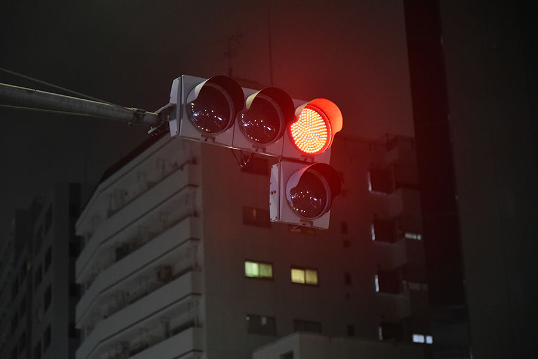
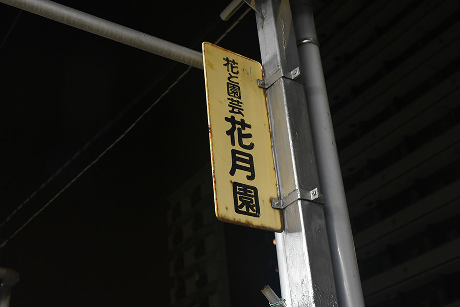
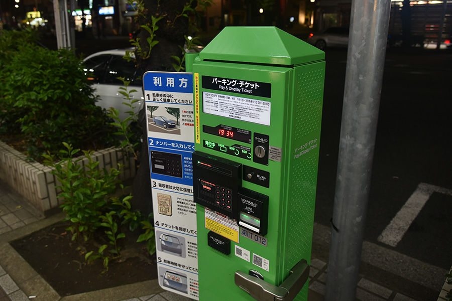
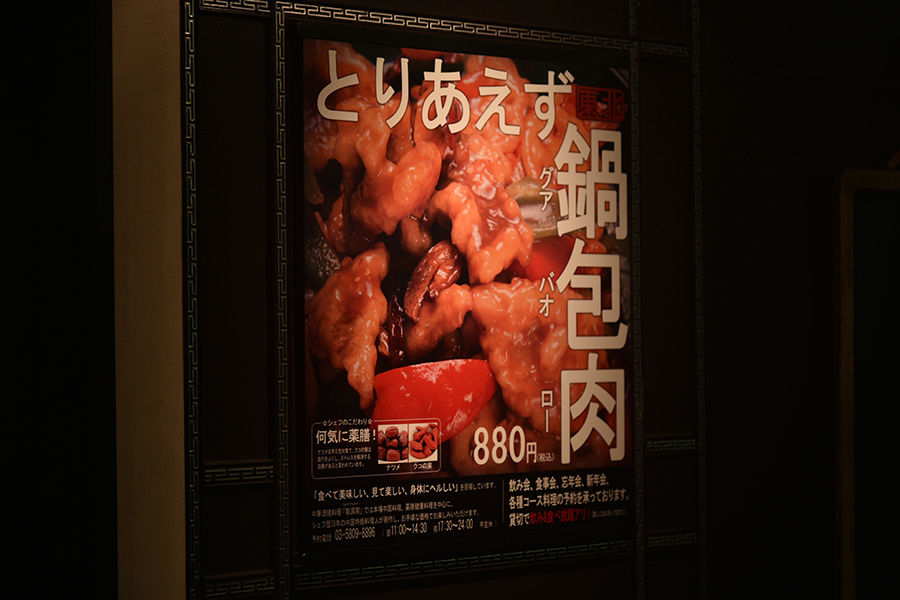
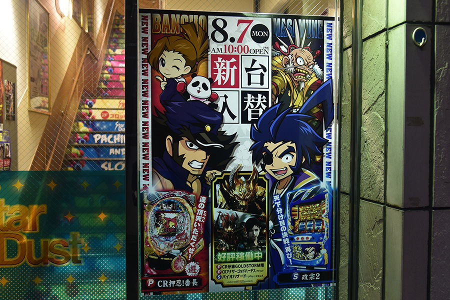
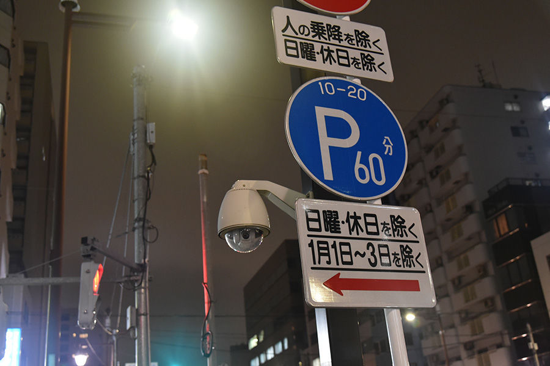
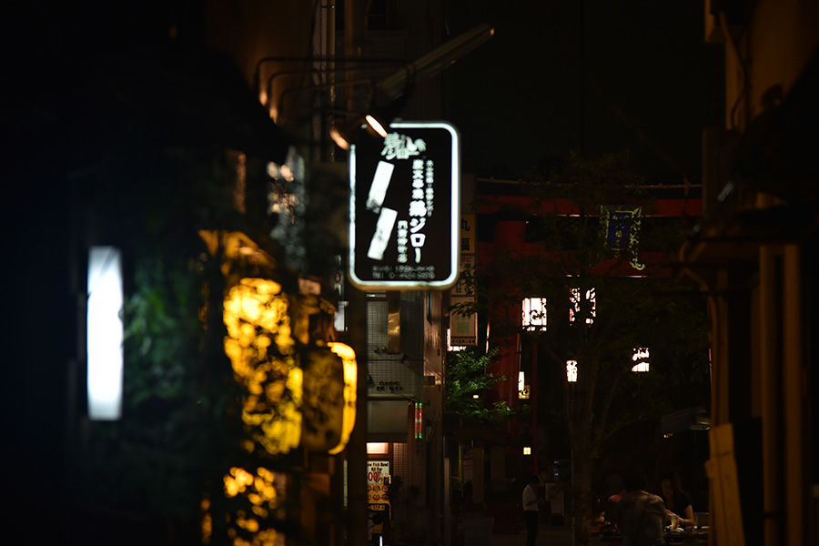
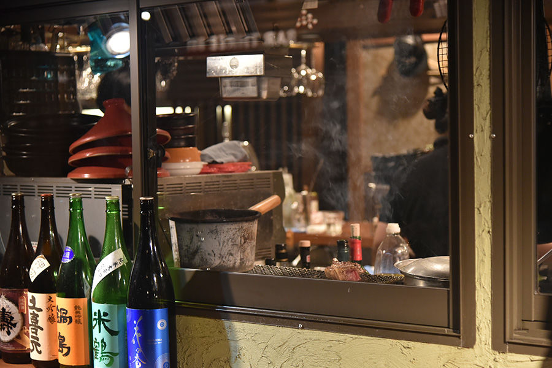
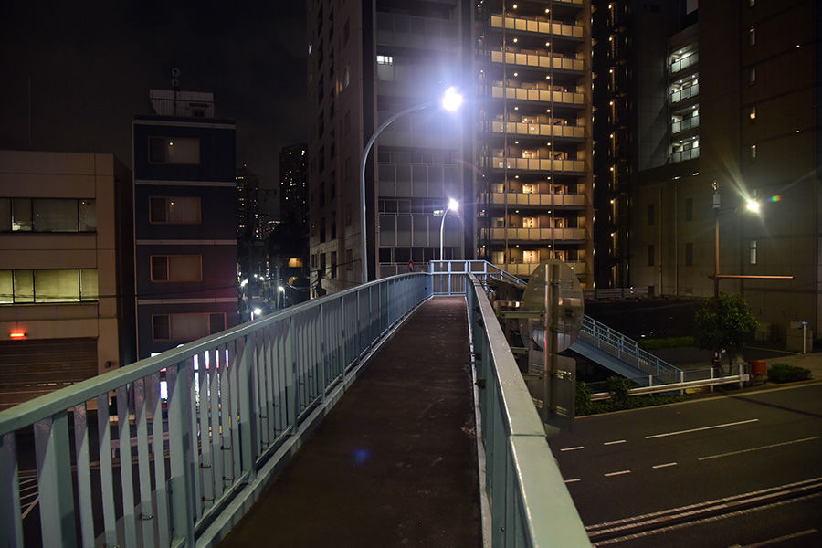
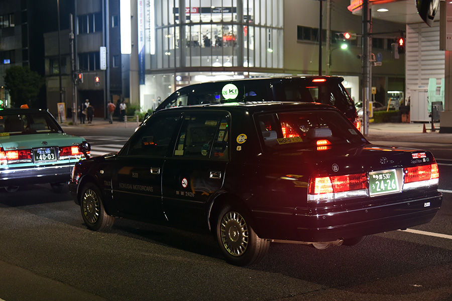

「陌生异乡」 不一样的心情不一样的国度
平时看东京的著名景点是看多了，这次我进入真正的日本老百姓社会生活地方。来到江东区木场一带，这里很平静，每天早上和晚上看到匆忙的上班族人群。而且深夜小饭馆，酒馆很多。红绿灯，和中国确实不大一样。

花月园，在江东区富冈1丁目22-1地方，其实是卖花的。附近有富冈八幡宫，东京蛮有名的的寺庙和神社，这个祭的最大的特色是路边围观的民众能够向抬神舆的人泼水，以示干净，异常热。

自动化停车位，日本自动化设备很成熟，唯一麻烦是不能手机支付，很多需要钢镚和金币。如果支付宝真正完全征服了日本，恐怕各种自动化设备都用手机来刷刷了。包括饮料机。美食和各种各样。

难得看到了锅包肉三个字，中华美食文化基本走向了世界。880日元转换人民币是54块钱，比国内贵了20多块，在东京这区域价格很正常不过了。

日本柏青哥文化很发达，我印象深刻是圣斗士星矢黄道十二宫复刻版，燃烧青春！

东京交通提示牌，对于有汉字很容易读懂。

木场真正的深夜酒馆，这里经常看到下班人群进进出出，实际料理则以海鲜和家常菜为主，顺带一些常见的酒水，比如啤酒、日本烧酒、廉价的威士忌等。店面五花八门，如果走遍每一家吃，恐怕永远吃不完。

还有一种就是烧烤，不过日本的烧烤和中国的还不一样，看起来很像，但是做法不同，烧烤的烤串也更大一些，这些肉的肉质也是要比国内的街边小摊好吃的多。

走累了，在天桥看看东京的风景，这时候微凉，思念祖国。

日本的出租车，贵的惊人。不仅仅贵，车质量真是好，看起来是80-90年代左右的老款皇冠和丰田。如此贵，比上海还贵。
